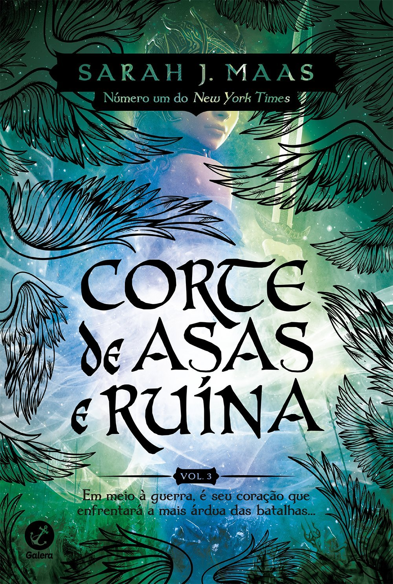

LIVROS
|  | Seguindo os acontecimentos do volume anterior, Corte de névoa e fúria, acompanhamos a saga de Feyre Archeon, que suportou a fome, o frio e a desesperança, atravessou a Montanha e foi Sob a Montanha. Reclamou seu amor, quebrou a maldição e livrou o povo feérico da mais terrível ameaça... ou não? Amarantha pode ter sido aniquilada, mas o rei de Hybern pretende usar o Caldeirão para moldar um novo tempo; uma época de trevas e escravidão. A guerra se aproxima, um conflito que promete devastar Prythian. Em meio à Corte Primaveril, num perigoso jogo de intrigas e mentiras, a Grã-Senhora da Corte Noturna esconde seu laço de parceria e sua verdadeira lealdade. Longe de sua corte, longe de seu Grão-Senhor e verdadeiro amor, ela reúne informações, na esperança de vencer Hybern. |
Obra por Sarah J. Maas.
Livro de 2017.
 |
Traços de uma sobrevivente: a mãe comunista, perseguida pelo nazismo, envia Liesel e o irmão para o subúrbio pobre de uma cidade alemã, onde um casal se dispõe a adotá-los por dinheiro. O garoto morre no trajeto e é enterrado por um coveiro que deixa cair um livro na neve. É o primeiro de uma série que a menina vai surrupiar ao longo dos anos. O único vínculo com a família é esta obra, que ela ainda não sabe ler. Assombrada por pesadelos, ela compensa o medo e a solidão das noites com a conivência do pai adotivo, um pintor de parede bonachão que lhe dá lições de leitura. Alfabetizada sob vistas grossas da madrasta, Liesel canaliza urgências para a literatura. Em tempos de livros incendiados, ela os furta, ou os lê na biblioteca do prefeito da cidade. |
Obra por Marcus Zusak.
Livro de 2007.
 |
Prestes a completar 19 anos, Poppy se prepara para sua Ascensão. Quer dizer, Poppy é preparada para sua Ascensão, já que, como tudo mais em sua vida, ela não tem opção senão Ascender. Sendo a Donzela, ela será entregue aos deuses de qualquer forma, seja lá o que isso signifique. Destinada a salvar Solis dos Atlantes, que amaldiçoaram o reino com a criação dos terríveis Vorazes, Poppy não entende o que está por vir e nem sabe se está pronta para ser entregue aos tais deuses ou, ainda, se sequer deseja fazê-lo. |
Obra por Jennifer L. Armentrout.
Livro de 2021.
 |
Simon Basset, o irresistível duque de Hastings, acaba de retornar a Londres depois de seis anos viajando pelo mundo. Rico, bonito e solteiro, ele é um prato cheio para as mães da alta sociedade, que só pensam em arrumar um bom partido para suas filhas. Simon, porém, tem o firme propósito de nunca se casar. Assim, para se livrar das garras dessas mulheres, precisa de um plano infalível. |
Obra por Julia Quinn.
Livro de 2013.